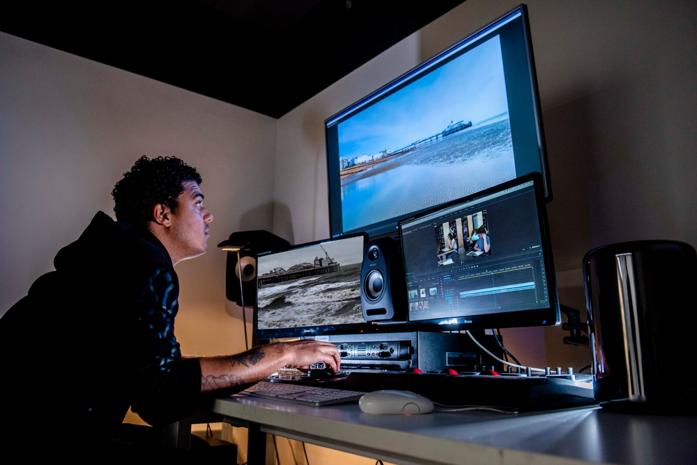

In-house content, end to end — concept, shoot, edit, motion, and the graphic system underneath that holds it together. England Rugby and the Red Roses, Baller League UK, and game launches with Xbox, 2K, Hoyoverse, Konami and Epic.

I design formats, not one-offs. A structure with its own graphic language a brand can run again next week with different talent. Same job whether it’s a World Cup, a game launch or a drag queen with an opinion.
Most of this was concepted, pitched, shot, cut, graded and animated by me. That matters less as a boast than as a reason the work holds together: I know what a format costs to make before I pitch it, and I can set the standard other people build to.
I’ve led content teams, directed freelancers, steered agency partners, and built the shared systems other people work to.
I build the tooling too: a shared caption system the social team works to, an agent that reports back on trends and disruptors weekly, AI in storyboarding and motion.